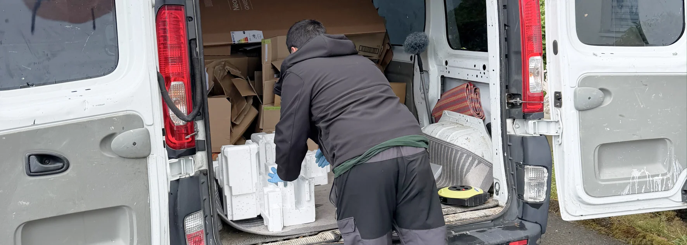

- 3 documents non négociables : assurance, devis fixe écrit, numéro IDE
- Services à vérifier : local, interurbain, international, box de stockage, démarches administratives
- Piège fréquent : les déménageurs au noir qui cassent les prix mais ne couvrent rien
- Bon réflexe : demander 2-3 devis comparatifs avant de signer
- Astuce : coordonner déménagement et nettoyage de fin de bail avec des partenaires liés
Pourquoi le choix du déménageur est plus important qu'on ne le croit
Un déménagement représente souvent l'un des moments les plus stressants de la vie. Vos meubles, vos objets personnels et parfois des biens de valeur passent entre les mains de l'entreprise choisie. Une mauvaise décision se paie en dommages, en délais, ou en mauvaises surprises sur la facture.
À cela s'ajoute la dimension administrative : en Suisse, un déménagement implique plusieurs démarches officielles (annonce à la commune, services industriels, changement d'adresse). Une entreprise sérieuse peut prendre tout ou partie de ces démarches à sa charge, ce qui change radicalement l'expérience.
Les 7 critères essentiels pour choisir un déménageur
Avant de signer un devis, vérifiez systématiquement ces points. Une entreprise sérieuse coche toutes les cases.
1. L'assurance et la responsabilité civile
C'est le critère non négociable. Si un meuble est cassé ou un objet endommagé pendant le transport, qui paie ? Sans assurance valide, c'est vous.
- Nom de l'assureur (AXA, La Mobilière, Zurich, etc.)
- Plafonds de couverture
- Conditions de prise en charge des dommages
2. Le devis écrit et fixe
Un devis téléphonique ou "à partir de" n'a aucune valeur. Une entreprise sérieuse établit un devis écrit, détaillé et fixe après visite des lieux ou envoi de photos.
- Volume estimé (en m³) et distance
- Services inclus (emballage, déballage, montage/démontage)
- Conditions de paiement, date et signature
3. L'expérience et l'ancienneté
Plus une entreprise est ancienne, plus elle a affronté de situations imprévues : escaliers étroits, ascenseurs en panne, meubles fragiles, déménagements internationaux. L'expérience se traduit directement par moins d'erreurs et plus de réactivité.
- Année de création
- Nombre de déménagements réalisés
- Références ou témoignages clients vérifiables
4. Les services proposés
Tous les déménageurs ne se valent pas en termes de prestations. Selon votre projet, vérifiez ce qui est inclus :
| Type de service | Pour qui | À vérifier |
|---|---|---|
| Déménagement local | Même ville/canton | Tarif au m³ ou forfaitaire |
| Déménagement interurbain | Entre cantons | Coût du transport longue distance |
| Déménagement international | France, Italie, Espagne… | Maîtrise des formalités douanières |
| Box de stockage | Période intermédiaire | Durée, accès, sécurité |
| Emballage / déballage | Gain de temps | Fourniture cartons et matériel |
| Montage / démontage | Meubles complexes | Outillage et expertise |
| Piano, œuvres d'art | Objets fragiles ou lourds | Matériel spécialisé |
5. La prise en charge des démarches administratives
C'est un point souvent oublié, mais qui change tout. Les meilleures entreprises de déménagement en Suisse incluent dans leur prestation :
- Les démarches douanières pour un déménagement international
- L'aide aux annonces administratives (commune, services industriels)
- Les autorisations de stationnement auprès de la commune
- La gestion des assurances pour les biens transportés
6. Les avis et témoignages vérifiables
Cherchez l'entreprise sur Google Maps, Local.ch et les plateformes d'avis suisses. Ce que vous cherchez :
- Note moyenne supérieure à 4,5/5
- Volume d'avis significatif (plusieurs dizaines minimum)
- Avis récents (moins de 12 mois)
- Réponses de l'entreprise aux avis négatifs (signe de professionnalisme)
7. La coordination avec d'autres services
Un déménagement isolé est rare. Il s'accompagne presque toujours d'un nettoyage de fin de bail, parfois d'un débarras, parfois d'un stockage temporaire. Une entreprise qui collabore avec d'autres prestataires de confiance simplifie radicalement votre projet.

Les pièges à éviter absolument
Les déménageurs au noir
Reconnaissables à des prix anormalement bas, à l'absence de devis écrit ou de numéro IDE. En cas de problème, aucun recours possible : pas d'assurance, pas de société identifiable.
- Pas de site web professionnel ni d'adresse physique
- Paiement exigé en cash uniquement
- Refus de fournir un devis écrit
- Absence de numéro IDE (CHE-xxx.xxx.xxx)
Les devis "à partir de"
Une formulation vague qui se transforme presque toujours en surcoûts. Le prix de départ alléchant grimpe le jour J avec des suppléments imprévus : escaliers, distance de portage, volume supérieur à l'estimation, fournitures.
Les déménageurs sans assurance pro
Beaucoup d'entreprises low-cost n'ont qu'une assurance minimale. Si un meuble vaut 3'000 CHF et que la couverture maximale est de 500 CHF, vous portez le risque.
Les questions à poser avant de signer
- Quel est le nom de votre assureur RC professionnelle ? → Réponse claire = bon signe
- Votre devis est-il fixe ou indicatif ? → Doit être fixe
- Que se passe-t-il si vous cassez quelque chose ? → Procédure claire attendue
- Pouvez-vous gérer mes démarches administratives ? → Service bonus apprécié
- Avez-vous un partenaire pour le nettoyage de fin de bail ? → Signe d'une vision globale
Comparatif : entreprise pro vs déménagement entre amis
L'auto-déménagement peut sembler économique. En réalité, il cache des coûts indirects souvent sous-estimés.
| Critère | Entreprise pro | Entre amis |
|---|---|---|
| Coût direct | Élevé | Faible (camion + essence) |
| Coût caché | Aucun | Bières, repas, jours de congé |
| Rapidité | Optimisée | Très variable |
| Risque de casse | Couvert par assurance | À votre charge intégrale |
| Effort physique | Aucun | Important |
| Risque blessure | Couvert | À votre charge |
| Stress | Faible | Élevé |
Pourquoi coordonner déménagement et nettoyage de fin de bail
Le jour du déménagement, votre logement se vide. C'est précisément à ce moment-là que le nettoyage de fin de bail devient possible. Si vous gérez les deux séparément, vous risquez des plannings qui se chevauchent, des allers-retours entre deux interlocuteurs, et des oublis coûteux.
Une coordination directe entre déménageur et entreprise de nettoyage permet :
- Un planning unique optimisé
- Un nettoyage de fin de bail dès que les meubles sont sortis
- Une remise des clés rapide à la régie
- Un seul interlocuteur pour répondre aux imprévus
C'est ce que propose la combinaison Malo Nettoyage + notre partenaire déménageur : un projet maîtrisé du début à la fin.
FAQ – Choisir une entreprise de déménagement en Suisse
Comment vérifier qu'une entreprise de déménagement est sérieuse en Suisse ?
Vérifiez trois éléments : son numéro IDE (CHE-xxx.xxx.xxx) au registre du commerce, le nom de son assureur RC professionnelle, et ses avis Google sur les 12 derniers mois. Une entreprise qui refuse de fournir ces informations est un signal d'alerte clair.
Combien de devis comparatifs faut-il demander ?
Idéalement 2 à 3 devis pour pouvoir comparer prestations et tarifs. Au-delà, l'écart de qualité entre les entreprises sérieuses devient marginal et la décision se joue davantage sur la coordination avec d'autres services (nettoyage, box, démarches administratives).
Une entreprise de déménagement peut-elle s'occuper des démarches administratives ?
Oui, les meilleures entreprises proposent ce service. Cela peut inclure les démarches douanières pour un déménagement international, les autorisations de stationnement, et l'aide aux annonces auprès des communes. C'est un service à demander explicitement lors du devis.
Faut-il un déménageur spécifique pour l'international ?
Pas forcément. Certaines entreprises locales suisses gèrent très bien les déménagements vers la France, l'Italie, l'Espagne et au-delà, en maîtrisant les formalités douanières. Vérifiez simplement leur expérience sur la destination visée.
Comment coordonner déménagement et nettoyage de fin de bail ?
Le plus efficace est de choisir des prestataires qui travaillent déjà ensemble. Un seul planning, un seul interlocuteur, un déroulement fluide : les meubles sortent, le nettoyage commence, les clés sont rendues. C'est ce que permet une collaboration directe entre déménageur et entreprise de nettoyage.
En résumé
Choisir une entreprise de déménagement en Suisse, c'est d'abord vérifier trois fondamentaux : assurance valide, devis fixe écrit, numéro IDE au registre du commerce. Ensuite, comparez les services proposés (local, interurbain, international, box, démarches administratives) selon la complexité de votre projet. Le vrai bonus, souvent négligé, c'est la coordination avec d'autres services comme le nettoyage de fin de bail. Cette vision globale simplifie radicalement l'expérience du déménagement.